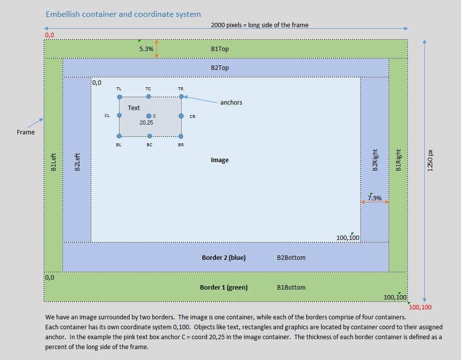

This is a paragraph of body text. Inline emphasis can use a highlighted phrase or a warning phrase, or any one-off inline color via a span style attribute.
Link example: visit example.com.
Images live in Docs/images/ and are referenced with a relative path:

HtmlWindow *w = new HtmlWindow("Winnow - My Topic",
":/Docs/yourpage.html",
QSize(900, 700), mwRect);| hdr 1 | hdr 2 |
|---|---|
| cell 1 | cell 2 |